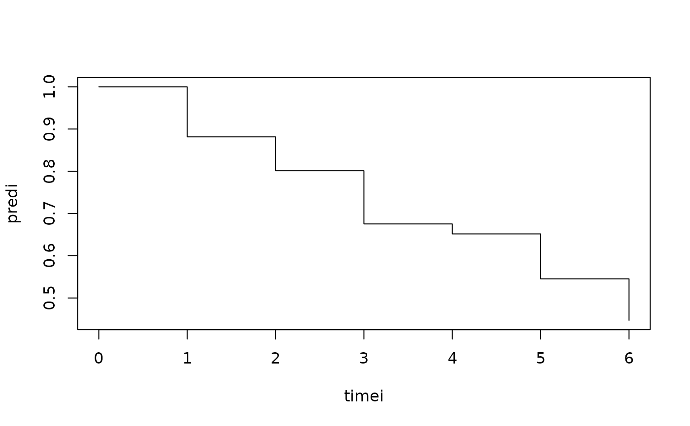

Discrete time to event interval censored data
Source:R/interval-cumoddsreg.r
interval.logitsurv.discrete.RdWe consider the cumulative odds model $$ P(T \leq t | x) = \frac{G(t) \exp(x \beta) }{1 + G(t) exp( x \beta) } $$ or equivalently $$ logit(P(T \leq t | x)) = log(G(t)) + x \beta $$ and we can thus also compute the probability of surviving $$ P(T >t | x) = \frac{1}{1 + G(t) exp( x \beta) } $$
Usage
interval.logitsurv.discrete(
formula,
data,
beta = NULL,
no.opt = FALSE,
method = "NR",
stderr = TRUE,
weights = NULL,
offsets = NULL,
exp.link = 1,
increment = 1,
...
)Arguments
- formula
formula
- data
data
- beta
starting values
- no.opt
optimization TRUE/FALSE
- method
NR, nlm
- stderr
to return only estimate
- weights
weights following id for GLM
- offsets
following id for GLM
- exp.link
parametrize increments exp(alpha) > 0
- increment
using increments dG(t)=exp(alpha) as parameters
- ...
Additional arguments to lower level funtions lava::NR optimizer or nlm
Details
The baseline \(G(t)\) is written as \(cumsum(exp(\alpha))\) and this is not the standard parametrization that takes log of \(G(t)\) as the parameters. Note that the regression coefficients are describing the probability of dying before or at time t.
Input are intervals given by ]t_l,t_r] where t_r can be infinity for right-censored intervals When truly discrete ]0,1] will be an observation at 1, and ]j,j+1] will be an observation at j+1. Can be used for fitting the usual ordinal regression model (with logit link) that in contrast, however, describes the probibility of surviving time t (thus leads to -beta).
Likelihood is maximized: $$ \prod P(T_i >t_{il} | x) - P(T_i> t_{ir}| x) $$
Examples
library(mets)
data(ttpd)
dtable(ttpd,~entry+time2)
#>
#> time2 1 2 3 4 5 6 Inf
#> entry
#> 0 316 0 0 0 0 0 0
#> 1 0 133 0 0 0 0 0
#> 2 0 0 150 0 0 0 0
#> 3 0 0 0 23 0 0 0
#> 4 0 0 0 0 90 0 0
#> 5 0 0 0 0 0 68 0
#> 6 0 0 0 0 0 0 220
out <- interval.logitsurv.discrete(Interval(entry,time2)~X1+X2+X3+X4,ttpd)
summary(out)
#> $baseline
#> Estimate Std.Err 2.5% 97.5% P-value
#> time1 -2.0064 0.1523 -2.305 -1.7079 1.273e-39
#> time2 -2.1749 0.1599 -2.488 -1.8614 4.118e-42
#> time3 -1.4581 0.1544 -1.761 -1.1554 3.636e-21
#> time4 -2.9260 0.2453 -3.407 -2.4453 8.379e-33
#> time5 -1.2051 0.1706 -1.539 -0.8706 1.633e-12
#> time6 -0.9102 0.1860 -1.275 -0.5457 9.843e-07
#>
#> $logor
#> Estimate Std.Err 2.5% 97.5% P-value
#> X1 0.9913 0.1179 0.76024 1.2223 4.100e-17
#> X2 0.6962 0.1162 0.46847 0.9238 2.064e-09
#> X3 0.3466 0.1159 0.11941 0.5738 2.788e-03
#> X4 0.3223 0.1151 0.09668 0.5478 5.111e-03
#>
#> $or
#> Estimate 2.5% 97.5%
#> X1 2.694610 2.138791 3.394874
#> X2 2.006032 1.597554 2.518953
#> X3 1.414239 1.126834 1.774950
#> X4 1.380231 1.101503 1.729490
#>
head(iid(out))
#> [,1] [,2] [,3] [,4] [,5]
#> 1 0.0045687959 0.004769499 0.0053427163 0.0059138018 0.0066308444
#> 2 0.0016959549 0.002038630 0.0025477402 0.0029776943 -0.0102830496
#> 3 0.0045687959 0.004769499 0.0053427163 0.0059138018 0.0066308444
#> 4 0.0027545442 -0.006047556 -0.0007244072 -0.0006949805 -0.0006704063
#> 5 -0.0002919658 -0.008889214 -0.0026820744 -0.0026532556 -0.0026268232
#> 6 0.0001497624 -0.008530642 -0.0033151419 -0.0032325395 -0.0031636812
#> [,6] [,7] [,8] [,9] [,10]
#> 1 0.0081721788 -0.0033482398 -0.0034168560 0.0034308192 -0.0034212419
#> 2 -0.0012875717 -0.0007883982 -0.0005310631 -0.0004080546 -0.0000776067
#> 3 0.0081721788 -0.0033482398 -0.0034168560 0.0034308192 -0.0034212419
#> 4 -0.0006379316 0.0003557924 0.0007697270 0.0008855193 -0.0013506040
#> 5 -0.0025608456 -0.0026170215 0.0016772465 0.0020412533 0.0017043055
#> 6 -0.0030621110 0.0015290328 0.0016662399 0.0020179143 0.0017471657
pred <- predictlogitSurvd(out,se=FALSE)
plotSurvd(pred)

ttpd <- dfactor(ttpd,fentry~entry)
out <- cumoddsreg(fentry~X1+X2+X3+X4,ttpd)
summary(out)
#> $baseline
#> Estimate Std.Err 2.5% 97.5% P-value
#> time1 -2.0064 0.1523 -2.305 -1.7079 1.273e-39
#> time2 -2.1749 0.1599 -2.488 -1.8614 4.118e-42
#> time3 -1.4581 0.1544 -1.761 -1.1554 3.636e-21
#> time4 -2.9260 0.2453 -3.407 -2.4453 8.379e-33
#> time5 -1.2051 0.1706 -1.539 -0.8706 1.633e-12
#> time6 -0.9102 0.1860 -1.275 -0.5457 9.843e-07
#>
#> $logor
#> Estimate Std.Err 2.5% 97.5% P-value
#> X1 0.9913 0.1179 0.76024 1.2223 4.100e-17
#> X2 0.6962 0.1162 0.46847 0.9238 2.064e-09
#> X3 0.3466 0.1159 0.11941 0.5738 2.788e-03
#> X4 0.3223 0.1151 0.09668 0.5478 5.111e-03
#>
#> $or
#> Estimate 2.5% 97.5%
#> X1 2.694610 2.138791 3.394874
#> X2 2.006032 1.597554 2.518953
#> X3 1.414239 1.126834 1.774950
#> X4 1.380231 1.101503 1.729490
#>
head(iid(out))
#> [,1] [,2] [,3] [,4] [,5]
#> 1 0.0045687959 0.004769499 0.0053427163 0.0059138018 0.0066308444
#> 2 0.0016959549 0.002038630 0.0025477402 0.0029776943 -0.0102830496
#> 3 0.0045687959 0.004769499 0.0053427163 0.0059138018 0.0066308444
#> 4 0.0027545442 -0.006047556 -0.0007244072 -0.0006949805 -0.0006704063
#> 5 -0.0002919658 -0.008889214 -0.0026820744 -0.0026532556 -0.0026268232
#> 6 0.0001497624 -0.008530642 -0.0033151419 -0.0032325395 -0.0031636812
#> [,6] [,7] [,8] [,9] [,10]
#> 1 0.0081721788 -0.0033482398 -0.0034168560 0.0034308192 -0.0034212419
#> 2 -0.0012875717 -0.0007883982 -0.0005310631 -0.0004080546 -0.0000776067
#> 3 0.0081721788 -0.0033482398 -0.0034168560 0.0034308192 -0.0034212419
#> 4 -0.0006379316 0.0003557924 0.0007697270 0.0008855193 -0.0013506040
#> 5 -0.0025608456 -0.0026170215 0.0016772465 0.0020412533 0.0017043055
#> 6 -0.0030621110 0.0015290328 0.0016662399 0.0020179143 0.0017471657